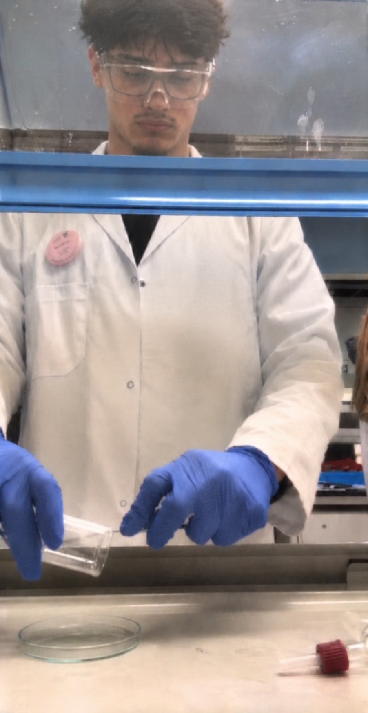
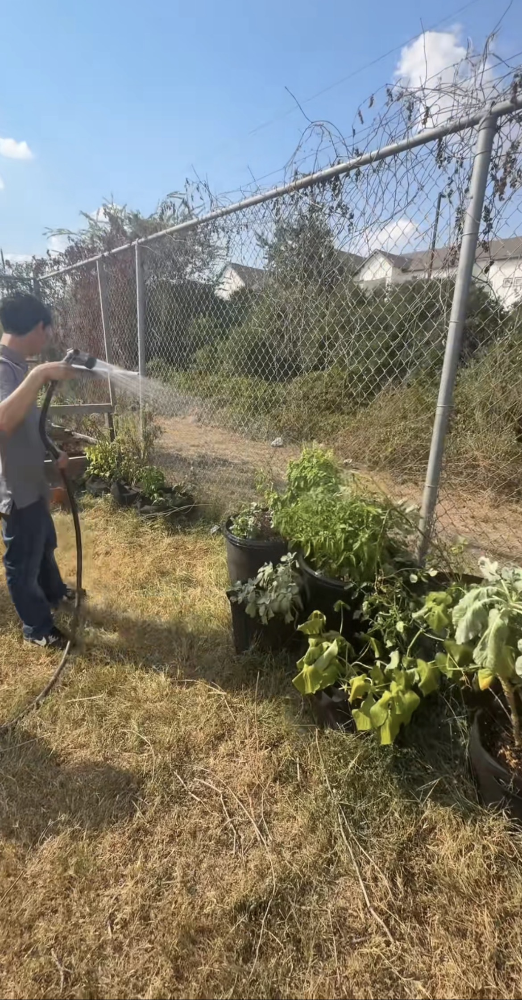
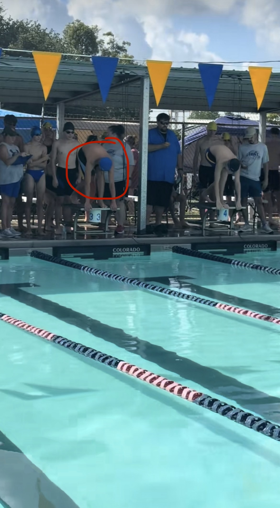
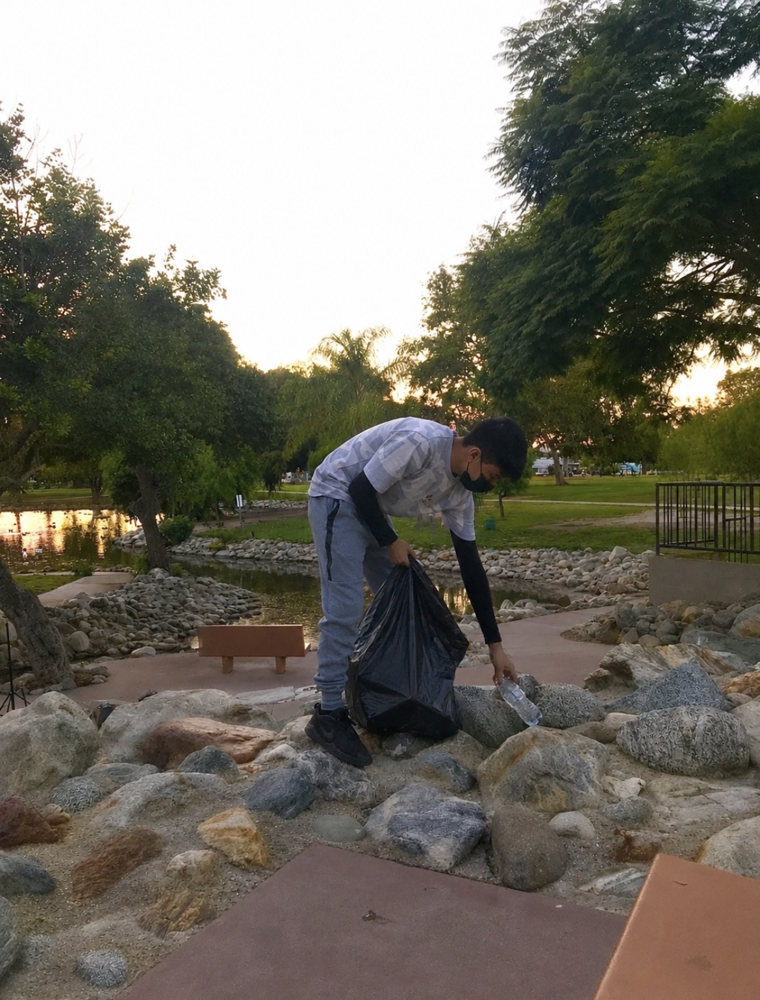

Hi, I'm David Lopez, a Chemistry student at the University of California, Riverside, working toward a B.S. in Chemistry and a career as a medicinal chemist. My interest in chemistry started when I was a kid. I loved mixing things together and watching how they reacted with each other, and that curiosity never went away. Chemistry is still that same idea, just on a bigger scale, and now I want to use it to help people by working on the medicines that improve their lives.
Before UCR, I attended Animo South Los Angeles Charter High School, where I graduated in June 2025 with a 3.5 GPA and academic honors during my senior year. I earned a 3.5 GPA award all four years, along with the Animo Scholars Award, Student of the Year in my ethics class, a Spanish class award, and the Student Government Award. I was part of Student Government from 2021 to 2024, where I helped coordinate schoolwide events like the blood drive, worked with several departments to plan activities that kept students engaged, and helped with logistics, finances, and leadership in our committees. I was also a member of the Gardening Club, where we planted trees around the school yard and joined programs that picked up trash around Los Angeles and at the beach. In the summer of 2022, I worked at Coast Tropicals in Gardena, where I cared for fish and prepared them for shipment, which taught me responsibility and attention to detail.
Outside of school, I love playing volleyball and swimming. I'm also interested in investing and options trading, which keeps me practicing analysis and managing risk. I'm fluent in both English and Spanish, and I work well on a team, adapt quickly to new environments, and try to bring a positive approach to every challenge. I'm looking for opportunities to grow in chemistry, from labs and research to internships, and to connect with people who share my interests. Feel free to reach out through the links below.
• Coordinated schoolwide events such as the blood drive
• Collaborated with several departments to plan activities for student engagement
• Assisted in logistics, finances, and leadership in the committees
• Fed fish according to schedule and monitored feeding habits
• Removed deceased fish from tanks and disposed of them properly
• Prepared fish for shipment by sorting, bagging, and boxing according to size and species
• Planted trees around the school yard
• Joined programs that picked up trash around the city of Los Angeles and at the beach



